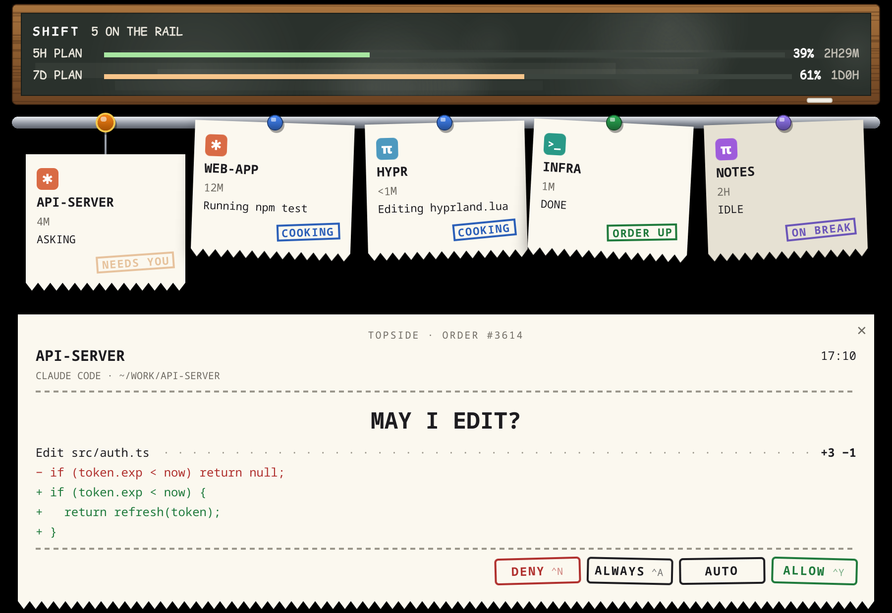

Topside on the Mac is an island in the notch that tells me which coding agent is waiting on me. In September I set up an Arch box next to the Mac, and the agents came along. They sat on Allow this command? in a tab three workspaces away, same as before.
Linux has no notch. It has something better: a bar you built yourself. So that's where Topside goes.
It sits in the bar you already run. On SekaiPop it's a bar entry, on DankMaterialShell a widget with a settings page, and on anything else a small Quickshell pill you can park in one of nine spots. topside setup looks at what's running and installs the right one. The entry wears your style on all three: on the board, the newest session's agent as a flight code and a flap per session, W for waiting, B for boarding, A for arrived. Blue works, orange waits on you, green is done.
The casting is the Mac's: your machine is the airport, the agents are the pilots flying your tasks, and the board says who's in the air and who's holding for you.

- ^Yallow
- ^Ndeny
- ^Aalways (Claude Code, OpenCode)
- ^1…^9pick an option
- ^Jjump
- escclose
It reads Claude Code, Codex CLI, pi, omp and OpenCode. A request to run a command or touch a file shows up with its diff. Answer it from the bar, or in the terminal, and the other one goes away. I was careful about one thing: a card that opens by itself never grabs the keyboard. You'd be mid-sentence in a terminal, and Topside isn't worth a lost sentence.
Who is this for? Anyone who runs two or more terminal agents at once and works on another workspace while the agents think. If you run one agent and watch it, close this tab: its own prompt is enough. An agent that lives inside an editor won't show up either; Topside reads the five terminal ones above and nothing else.
This is where I let myself have fun. Board is a split-flap departures board. Kitchen prints each request as an order ticket that you stamp ALLOW or DENY, and the session list hangs on a kitchen rail under a chalkboard of your plan usage. Its bar entry is a little printer: a light that blinks amber while something waits, and a paper stub per session.

A long session gets slow and expensive before anyone notices. So when a turn ends with the context past your line, a card says how full it is, "Context 21% used · 214K of 1M", with Later, Jump and Compact. Compact goes to the session and types /compact for you in WezTerm, Orca or tmux; in another terminal it lands there with the command on your clipboard. Claude Code gives that number only to its status line, so it needs topside usage install. The other agents report it through their hooks.
When you'd rather answer in the terminal, ^J or a click takes you there. Topside walks up the session's process tree to its window, focuses it through hyprctl, and picks the tab in WezTerm, Orca or tmux. That part needs Hyprland. Other compositors still get the list and the answers.
How it works
Each agent's hook runs topside hook, which hands one JSON message to a small daemon over a Unix socket. The daemon runs as a systemd --user service and keeps sessions in SQLite under ~/.local/state/topside. The bar draws what the daemon says. Nothing leaves the machine unless you're on OpenCode Go, where the plugin asks opencode.ai for your limits. Stopping the daemon puts every agent back to asking in the terminal.
Unlike the Mac app, this one is MIT, and the code you install is the code that runs: plain JavaScript and QML under /usr/lib/node_modules/topside-arch. A tool that reads your prompts should be one you can read.
Install
sudo pacman -S nodejs npm quickshellsudo npm install -g topside-archNode 26 or later. Then, as yourself rather than root:
topside setupnpm doesn't do services, so setup writes the daemon's unit for systemd, pointed at the node and the topside you just ran, wherever npm put them (your home without sudo or with nvm), and starts it now and at login. Then it puts Topside in your bar and installs the hooks of every agent you have: Claude Code, Codex, pi, omp, OpenCode. It prints each file it wrote. Without SekaiPop or DMS, run topside pill; setup prints the line that starts it at login. An agent you install later shows up as NOT TRACKED until you run setup again.
To upgrade, run the npm line again, then topside setup. It refreshes the bar's files and restarts your shell and the daemon, so the new version shows without a logout. Removing it, what each command writes and where, and what to check when a session doesn't show are in the docs.
Not there yet
The pill has no sounds, reminders or hiding yet. Ghostty, Kitty and Alacritty get the window but not the tab. It's called topside-arch because Arch with Hyprland is the only place I've tried it; if it works on your distro, tell me and the name can grow up.
Ban
P.S. The release notes list everything up to 0.5.6. OpenCode is the fifth agent, the context card now counts tokens, not percent, and topside setup now starts the daemon and installs every agent's hooks.